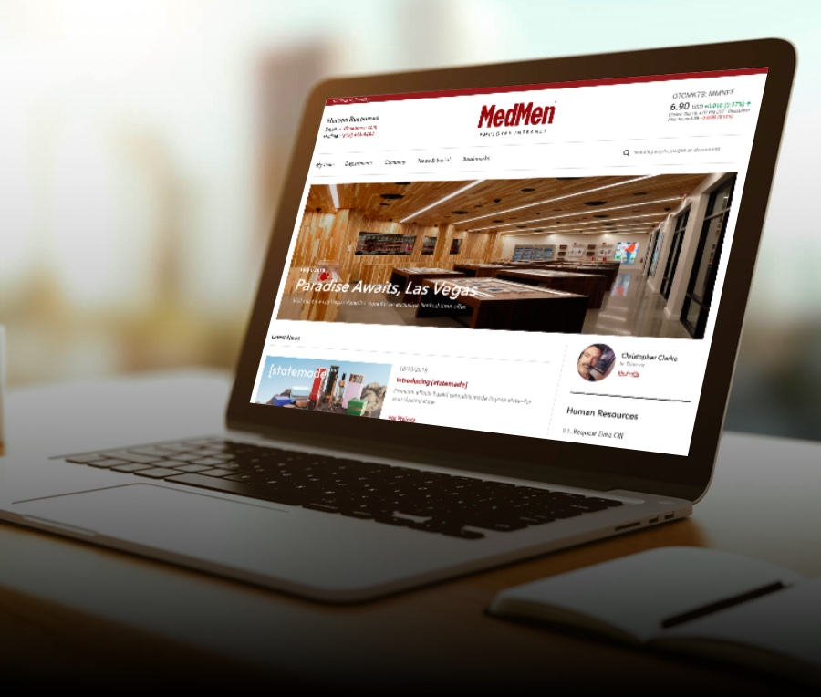

portfolio - New
Employee Intranet
MedMen Intranet
MedMen was using the thrid pary company software for HR and employees. There were lots of functionality for HR department and Employee persoanl information what they can mange by themselves. However, executive team realized that we needed MedMen own interanl system intead third party software to manage it easily in-house.